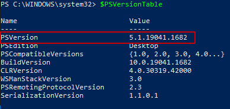
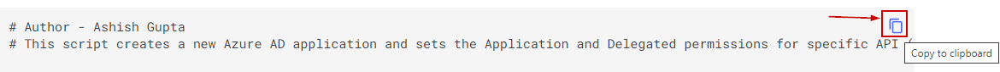
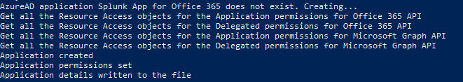
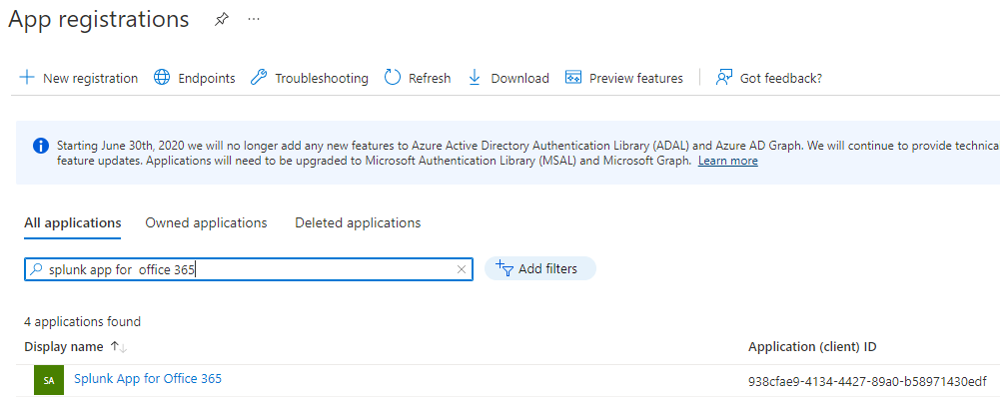
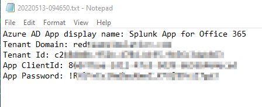
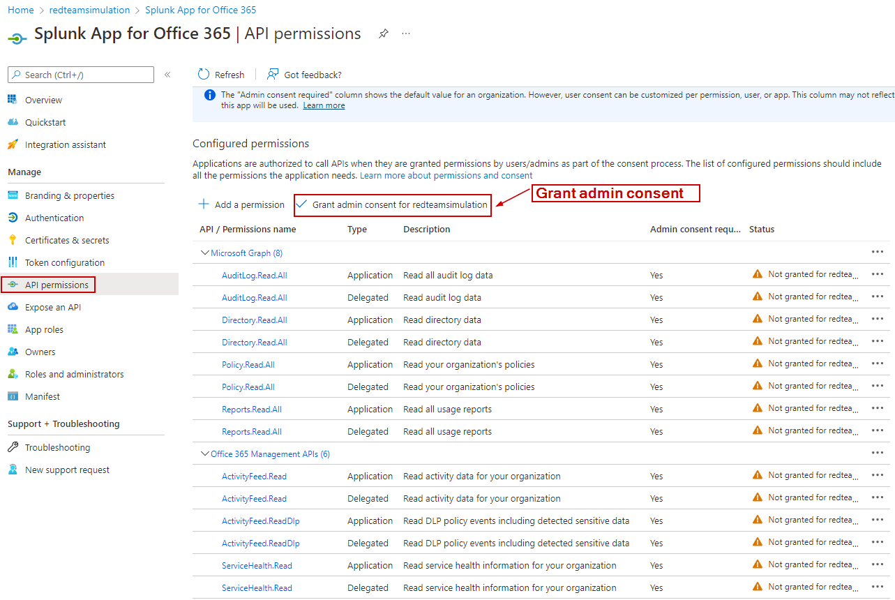
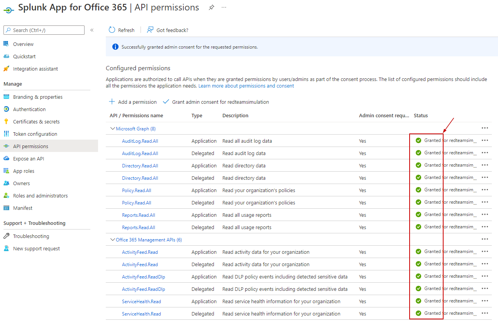

Setup AzureAD App For Splunk
This section covers setting up an Azure AD app for Splunk Add-on so O365 logs could be ingested in Splunk.
Below script would create the app so It does not need to be created manually.
The admin consent needs to be granted via the Azure portal (instructions below).
The details for the newly created app needs to be provided to the Splunk Administrator so they could set up the Azure tenant for the log ingestion.
Step 0 - Install Azure AD Powershell
Please execute the below in PowerShell to install the Azure AD module for Powershell
Install-Module AzureAD
Please ensure you are executing the above in Powershell v5.1 and not 7.x. Execute the below to ensure :
$PSVersionTable

Step 1 - PowerShell script to Create the app
Please ensure you are in the Global Administrator role in the tenant. The script may prompt you to login.
Open Powershell as administrator.
Copy the script by clicking on the copy icon in script below.
Paste the script on the Powershell window and hit enter.

# Author - Ashish Gupta
# This script creates a new Azure AD application and sets the Application and Delegated permissions for specific API (O365)
$TenantDetails = $NULL
$CurrentlyLoggedInUser = $NULL
$OnMicrosoftDomain = $NULL
$connection = $NULL
try {
$AzureADSession = Get-AzureADCurrentSessionInfo
$CurrentlyLoggedInUser = $AzureADSession.Account | select -ExpandProperty Id
Write-Host "Already connected to : $AzureADSession.TenantDomain as $CurrentlyLoggedInUser"
$CurrentUserId = Get-AzureADUser -Filter "UserPrincipalName eq '$CurrentlyLoggedInUser'" | select -ExpandProperty ObjectId
}
catch [Microsoft.Open.Azure.AD.CommonLibrary.AadNeedAuthenticationException] {
Write-Host "You're not connected to AzureAD. Connecting now...";
$connection = Connect-AzureAD
$AzureADSession = Get-AzureADCurrentSessionInfo
$CurrentlyLoggedInUser = $AzureADSession.Account | select -ExpandProperty Id
Write-Host "Connected to : $AzureADSession.TenantDomain as $CurrentlyLoggedInUser"
$CurrentUserId = Get-AzureADUser -Filter "UserPrincipalName eq '$CurrentlyLoggedInUser'" | select -ExpandProperty ObjectId
}
$CurrentTimestamp = [DateTime]::Now.ToString("yyyyMMdd-HHmmss")
$ApplicationDisplayName = "Splunk App for Office 365"
$AzureADAppForSplunk = Get-AzureADApplication -Filter "DisplayName eq '$ApplicationDisplayName'"
if($AzureADAppForSplunk -eq $NULL) {
write-output("AzureAD application " + $ApplicationDisplayName + " does not exist. Creating...")
# Get the service principal for O365 and Microsoft Graph
$ServicePrincipalO365API = Get-AzureADServicePrincipal -All $true | ? { $_.DisplayName -eq "Office 365 Management APIs" }
$ServicePrincipalMicrosoftGraph = Get-AzureADServicePrincipal -All $true | ? { $_.DisplayName -eq "Microsoft Graph" }
# Get all application permissions for Microsoft Graph
$ServicePrincipalMicrosoftGraphAppRoles = $ServicePrincipalMicrosoftGraph.AppRoles | Where-Object {$_.Value -match "\bDirectory.Read.All\b|\bAuditLog.Read.All\b|\bPolicy.Read.All\b|\bReports.Read.All\b"}
# Get all delegated permissions for Microsoft Graph
$ServicePrincipalMicrosoftGraphDelegatedRoles = $ServicePrincipalMicrosoftGraph.Oauth2Permissions | Where-Object {$_.Value -match "\bDirectory.Read.All\b|\bAuditLog.Read.All\b|\bPolicy.Read.All\b|\bReports.Read.All\b"}
# Get all application permissions for O365 API
$ServicePrincipalO365APIAppRoles = $ServicePrincipalO365API.AppRoles | Where-Object {$_.Value -match "\bActivityFeed.Read\b|\bActivityFeed.ReadDlp\b|\bServiceHealth.Read\b"}
# Get all delegated permissions for O365 API
$ServicePrincipalO365APIDelegatedRoles = $ServicePrincipalO365API.Oauth2Permissions | Where-Object {$_.Value -match "\bActivityFeed.Read\b|\bActivityFeed.ReadDlp\b|\bServiceHealth.Read\b"}
# Create a Required Resource Access object for Office 365
$RequiredResourceAccessO365API = New-Object -TypeName "Microsoft.Open.AzureAD.Model.RequiredResourceAccess"
$RequiredResourceAccessO365API.ResourceAppId = $ServicePrincipalO365API.AppId
# Create a Required Resource Access object for Microsoft Graph
$RequiredResourceAccessMicrosoftGraph = New-Object -TypeName "Microsoft.Open.AzureAD.Model.RequiredResourceAccess"
$RequiredResourceAccessMicrosoftGraph.ResourceAppId = $ServicePrincipalMicrosoftGraph.AppId
$ServicePrincipalO365APIAppRolesSelectedPermissions = @()
$ServicePrincipalSelectedPermissionsMicrosoftGraph = @()
# Get all the Resource Access objects for the Application permissions for Office 365 API
Write-output "Get all the Resource Access objects for the Application permissions for Office 365 API"
foreach ($ServicePrincipalO365APIAppRole in $ServicePrincipalO365APIAppRoles)
{
$Permission = New-Object -TypeName "Microsoft.Open.AzureAD.Model.ResourceAccess" -ArgumentList $ServicePrincipalO365APIAppRole.Id,"Role"
$ServicePrincipalO365APIAppRolesSelectedPermissions += $Permission
}
# Get all the Resource Access objects for the Delegated permissions for Office 365 API
Write-output "Get all the Resource Access objects for the Delegated permissions for Office 365 API"
foreach ($ServicePrincipalO365APIDelegatedRole in $ServicePrincipalO365APIDelegatedRoles)
{
$Permission = New-Object -TypeName "Microsoft.Open.AzureAD.Model.ResourceAccess" -ArgumentList $ServicePrincipalO365APIDelegatedRole.Id,"Scope"
$ServicePrincipalO365APIAppRolesSelectedPermissions += $Permission
}
# Get all the Resource Access objects for the Application permissions for Microsoft Graph API
Write-Output "Get all the Resource Access objects for the Application permissions for Microsoft Graph API"
foreach ($ServicePrincipalMicrosoftGraphAppRole in $ServicePrincipalMicrosoftGraphAppRoles)
{
$Permission = New-Object -TypeName "Microsoft.Open.AzureAD.Model.ResourceAccess" -ArgumentList $ServicePrincipalMicrosoftGraphAppRole.Id,"Role"
$ServicePrincipalSelectedPermissionsMicrosoftGraph += $Permission
}
# Get all the Resource Access objects for the Delegated permissions for Microsoft Graph API
Write-Output "Get all the Resource Access objects for the Delegated permissions for Microsoft Graph API"
foreach ($ServicePrincipalMicrosoftGraphDelegatedRole in $ServicePrincipalMicrosoftGraphDelegatedRoles)
{
$Permission = New-Object -TypeName "Microsoft.Open.AzureAD.Model.ResourceAccess" -ArgumentList $ServicePrincipalMicrosoftGraphDelegatedRole.Id,"Scope"
$ServicePrincipalSelectedPermissionsMicrosoftGraph += $Permission
}
# Assign all the permissions to the required Resource access for the O365 API
$RequiredResourceAccessO365API.ResourceAccess = $ServicePrincipalO365APIAppRolesSelectedPermissions
# Assign all the permissions to the required Resource access for the Microsoft Graph
$RequiredResourceAccessMicrosoftGraph.ResourceAccess = $ServicePrincipalSelectedPermissionsMicrosoftGraph
# Create the Password credential for the new app
Add-Type -AssemblyName System.Web
$ApplicationPassword =[System.Web.Security.Membership]::GeneratePassword(32,2)
$ApplicationPassword = $ApplicationPassword.Replace("+","_")
$ApplicationPassword = $ApplicationPassword.Replace("-","_")
$keyId = (New-Guid).ToString();
$fromDate = [System.DateTime]::Now
$durationInYears = 5
$endDate = $fromDate.AddYears($durationInYears)
$Applicationkey = New-Object Microsoft.Open.AzureAD.Model.PasswordCredential($null, $endDate, $keyId, $fromDate, $ApplicationPassword)
# Create the new app with the password cred
$aadApplication = New-AzureADApplication -DisplayName $ApplicationDisplayName -PasswordCredentials $Applicationkey
write-output("Application created")
# Set the permissions
Set-AzureADApplication -ObjectId $aadApplication.ObjectId -RequiredResourceAccess $RequiredResourceAccessO365API,$RequiredResourceAccessMicrosoftGraph
write-output("Application permissions set")
# Saving the details for the app
$temp_location = (get-location).Drive.Root+"office365_temp\"
$temp_file = $temp_location + $CurrentTimestamp+".txt"
New-Item $temp_location -ItemType Directory -Force | Out-Null
New-Item $temp_file -ItemType File -Force | Out-Null
Add-Content $temp_file ("Azure AD App display name: " + $aadApplication.DisplayName)
Add-Content $temp_file ("Tenant Domain: " + $AzureADSession.TenantDomain)
Add-Content $temp_file ("Tenant Id: " + $AzureADSession.TenantId)
Add-Content $temp_file ("App ClientId: " + $aadApplication.AppId)
Add-Content $temp_file ("App Password: " + $ApplicationPassword)
.\notepad.exe $temp_file
write-output("Application details written to the file")
}else{
write-output("AzureAD application '" + $AzureADAppForSplunk.DisplayName + "' already exists.")
}
The powershell script got executed and we can see the newly created app in the Azure portal:


Step 2 - Provide app details to Splunk Admin
The details for the newly created app is opened in the Notepad.
This should be sent to the Splunk Administrator so they could set up the Splunk Add-on for O365 for this tenant.

Step 3 - Grant Admin Consent in Azure Portal
Log in to the Azure portal as Global Administrator.
Navigate to Azure Active Directory > App Registrations > Click on "All Applications" > Go to "Splunk app for Office 365".
In the app, click on "API Permissions".
Notice all the permissions have already been assigned via the script.
Click on "Grant admin consent for tenant"

After the admin consent grant, It should look like below :
